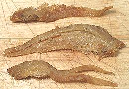

These very large Anchovies (up to nearly 18 inches) are native to the coast of China, from Hong Kong north around the west coast of Korea and down to southwest Japan. This fish is a commercial catch throughout its range, its large size making it an attractive food fish. These are marine fish, but can tolerate fresh water and go as far as 600 miles up the Yangtze river. They are called "grenadier" in common with many other fish with a similar tapered body style. Photo by CAFS distributed under license Creative Commons Attribution-NonCommercial v3.0 Unported.
A similar fish, the Yangtze Grenadier Anchovy (Coilia brachygnathus) is also fished commercially in China, but is a strictly fresh water fish confined to the Yangtze River System. It is smaller, growing to nearly 12 inches long.
More on Anchovies
Because it is so large, this fish is more used for food than other Grenadier Anchovies (genus Coilia). In Japan it is used for Etsu sushi, a very prestigious sushi because of its rarity. This fish is only found in the Chikugo River during May, June and July. It is also grilled, fried and used in soup.
 To the left are pictured fillets from a can labeled "Long Tailed Anchovies", fried, (MaLing brand from China). These came in a large flat can holding 6-1/2 ounces. The can was quite light for its size because it contained almost no liquid, just a little oil. The fillets were about 3 inches long.
These have a fairly strong, salty flavor, but quite different from
regular canned anchovies - more like kippers. They can be used as a salty
snack item, or as a flavoring ingredient in dishes that would otherwise
be a little too bland.